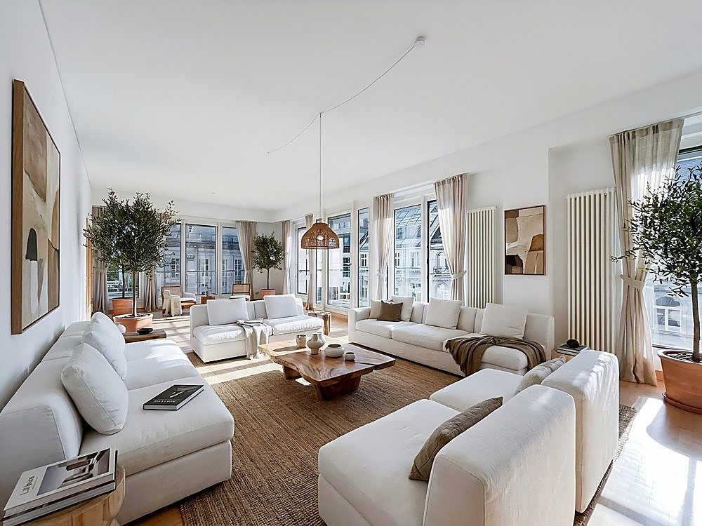
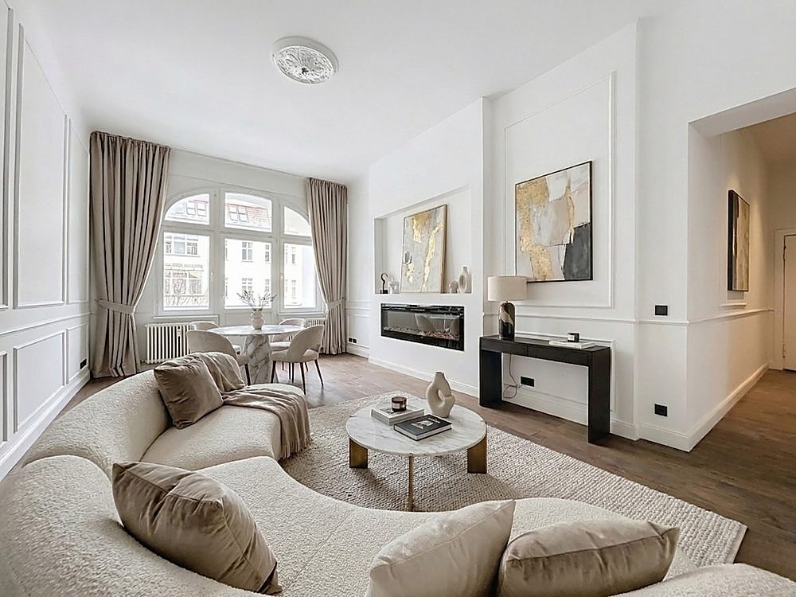
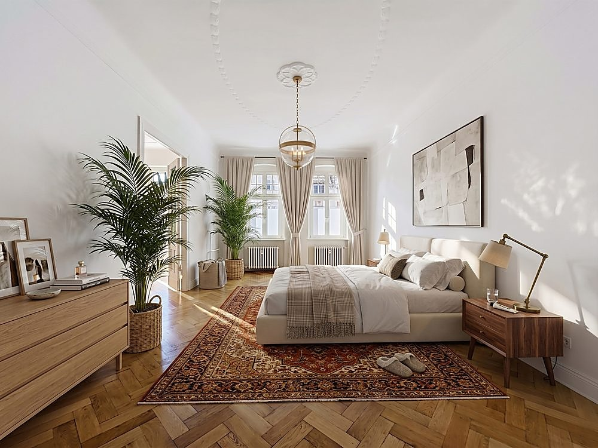
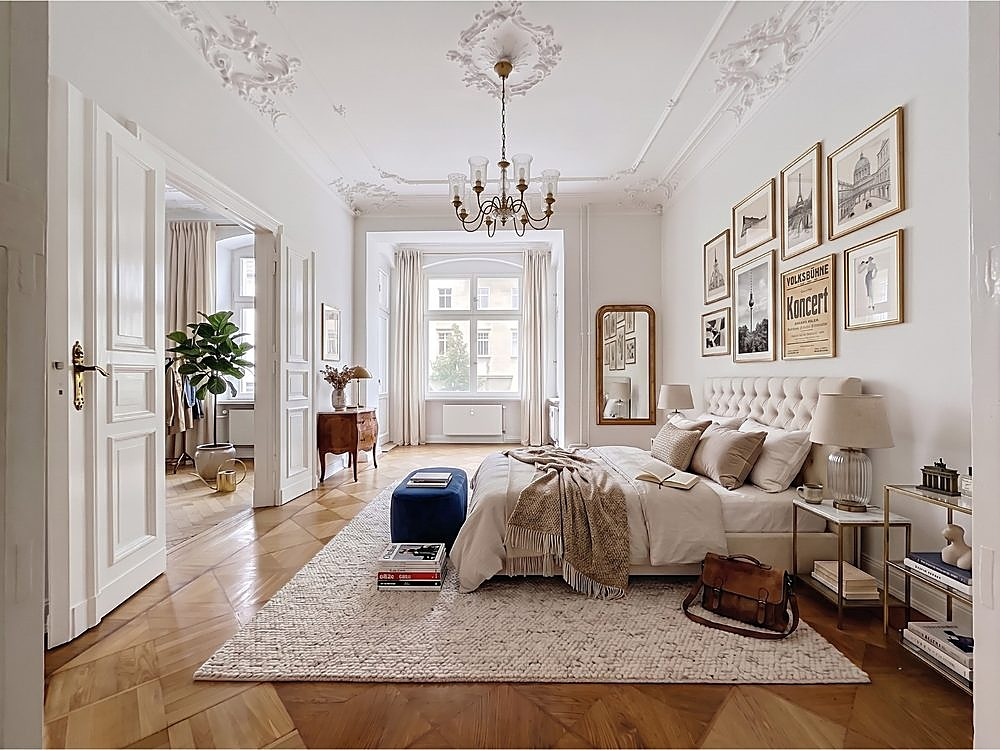
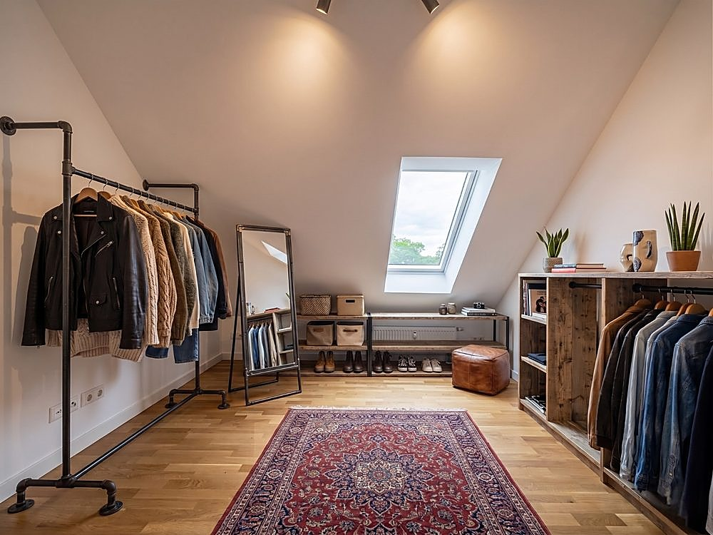
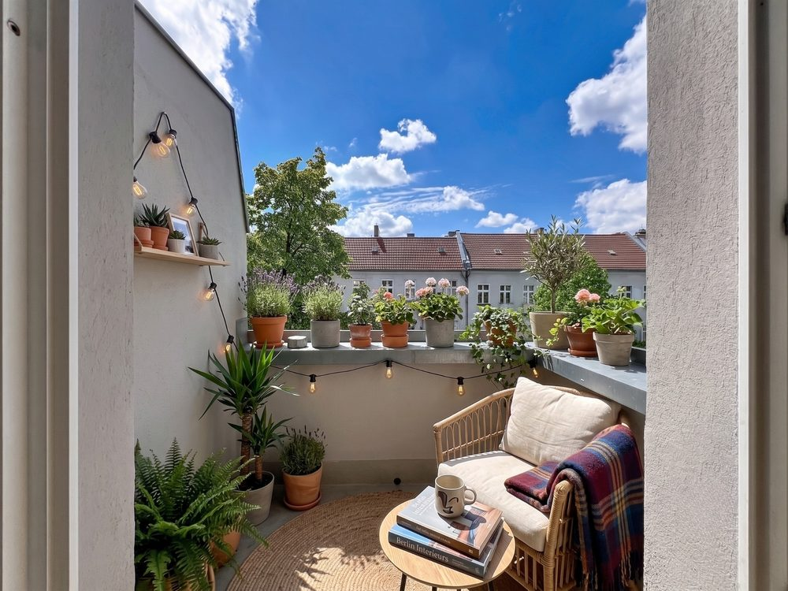
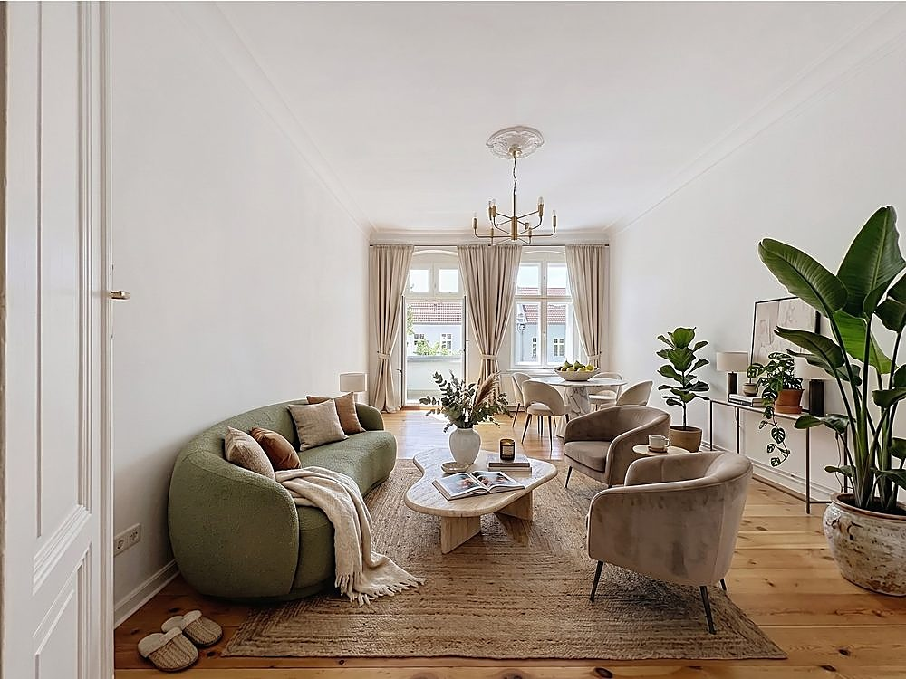
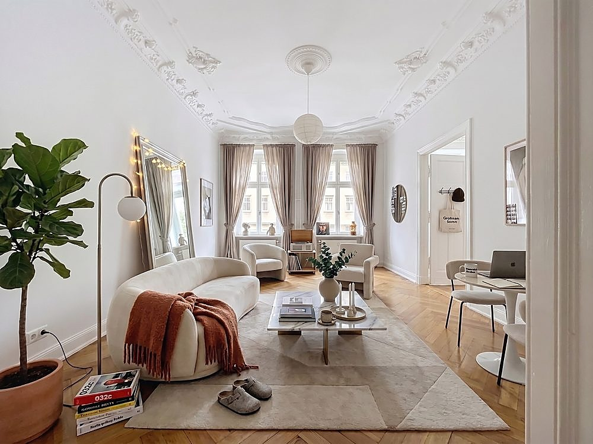
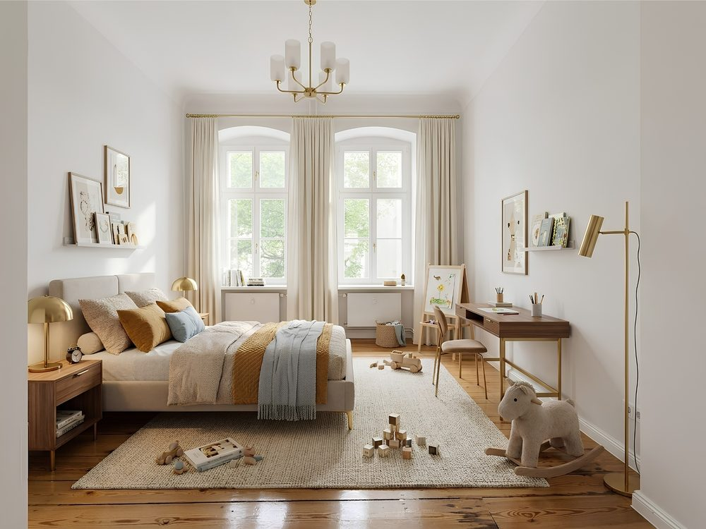
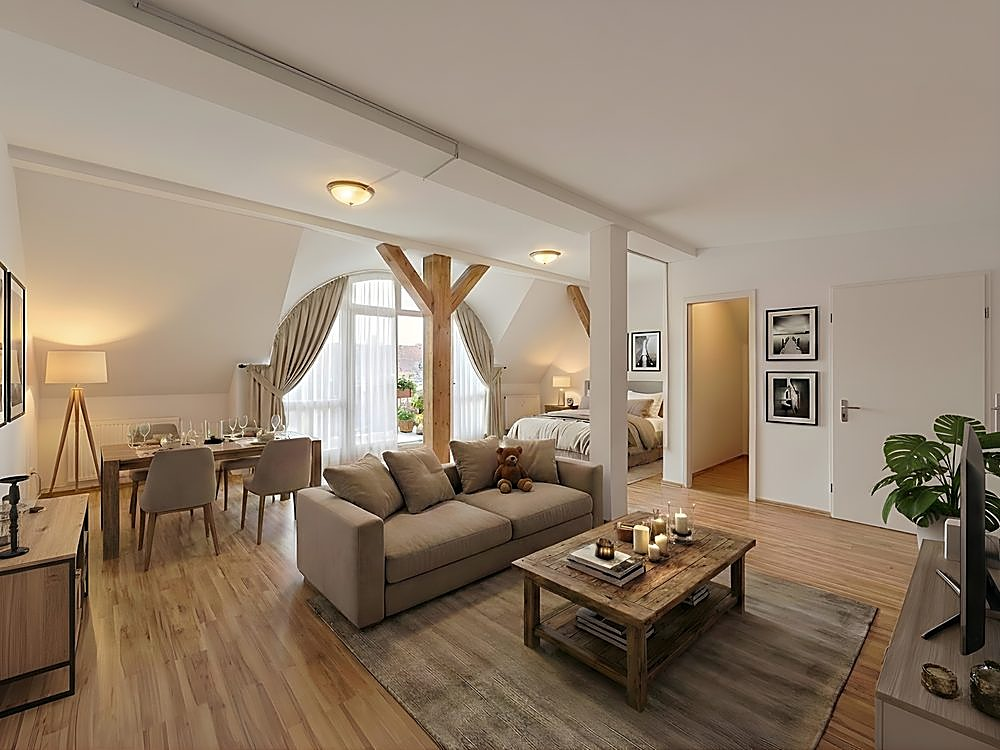

Home staging virtuel, 2025-2026
Home staging virtuel

Le contexte. Ces mises en scène proviennent de vrais projets clients, réalisés dans le cadre d'une expérience précédente en gestion de projet et marketing digital pour une agence immobilière. Le home staging virtuel intervenait sur des biens vides ou à la décoration datée, avant la mise en ligne des annonces. L'objectif n'est pas décoratif mais commercial : aider un acheteur ou un locataire à se projeter dans un espace qu'il découvre d'abord en photo, avant même la visite.
La démarche. Plutôt que de meubler une pièce pour qu'elle soit jolie, chaque mise en scène part des contraintes réelles du bien : orientation de la lumière, hauteur sous plafond, circulation, volumes difficiles à lire sur les photos d'annonce. Le mobilier choisi vient répondre à ces contraintes plutôt que les masquer, pièce par pièce.
Le résultat. Une palette claire et neutre reste constante d'un bien à l'autre, pour que l'attention reste sur l'architecture existante plutôt que sur le décor rapporté. L'échelle du mobilier respecte les proportions réelles de chaque pièce, plutôt que de chercher à la remplir.
Biens mis en scène








